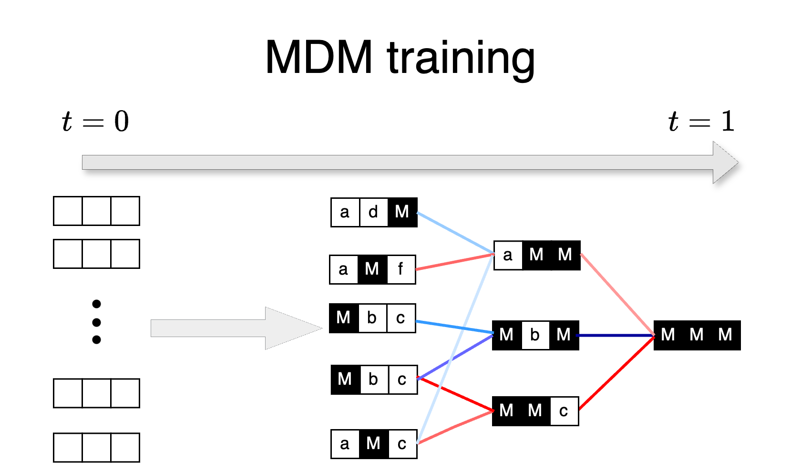
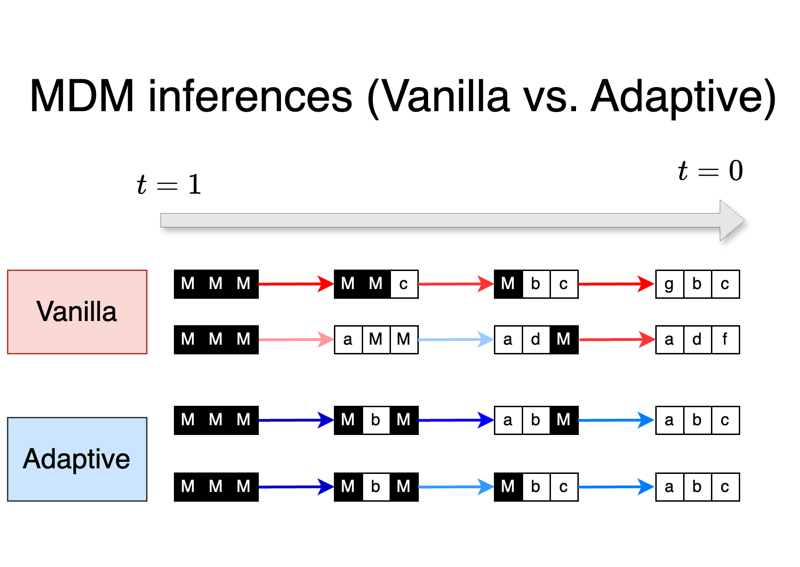
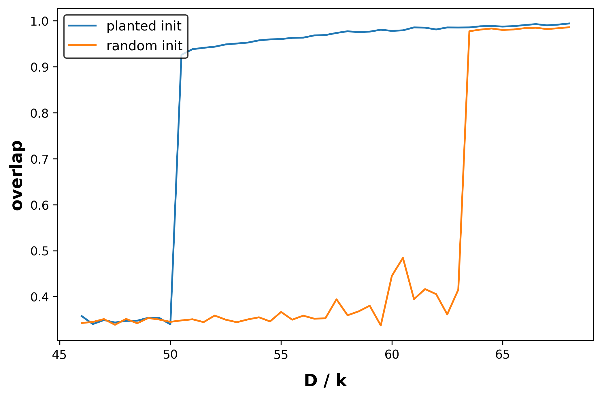
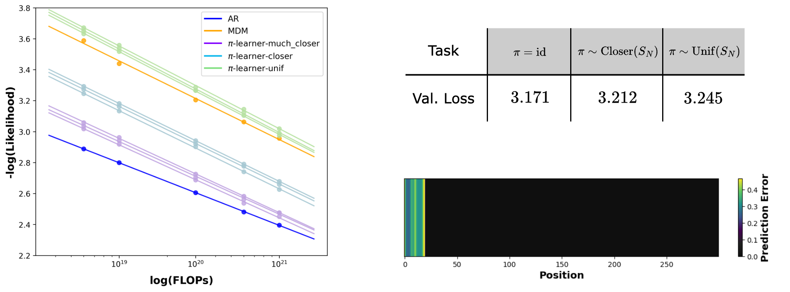
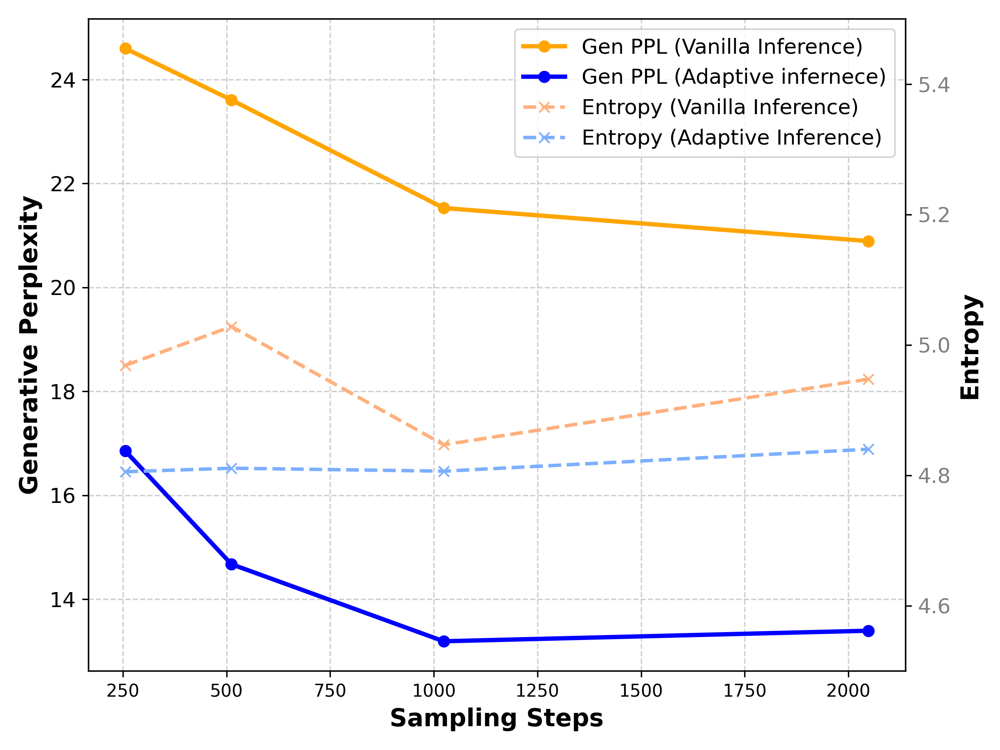

训练按最坏的来，推理挑最好的走：理解掩码扩散模型里的 token 顺序
Train for the Worst, Plan for the Best: Understanding Token Ordering in Masked Diffusions
阅读状态、进度与收藏只保存在你的浏览器里。论文没有发布官方代码。
逐节精读
这部分按论文的章节顺序，用本站自己的话把整篇论文从头讲一遍。读懂某个概念需要的背景知识，会在第一次用到它之前单独讲清楚（青色框）。每个结论都尽量说出“因为什么、所以什么”。论文以 CC BY 4.0 发布，原图放在讲到它的地方并说明怎么看；原图没画到的概念用本站的示意图补上。标“推算”的数字是本站根据论文数据算出来的，标“读图”的是从原图上估读的，都不是论文原话。正文依据 arXiv v3（2025-08-19）。每节末尾有英文原文的链接。
0 导读：这篇论文解决什么问题
今天的大语言模型几乎都是自回归模型（autoregressive model，下文简称 AR）：它从左到右一个一个地生成 token，每一步都只根据已经写出的前文去猜下一个。掩码扩散模型（masked diffusion model，下文简称 MDM）走的是另一条路：先把整段输出全部“盖住”，然后分很多轮逐步揭开，每一轮由模型猜出某些被盖住的位置是什么；训练时则随机盖住一段文本里的一部分 token，让模型把它们猜回来。LLaDA 这样的 8B 级 MDM 已经能在不少基准上接近同规模的 AR，但在衡量文本建模质量的似然指标上，MDM 一直明显落后于 AR。
这篇论文把 MDM 和 AR 之间的取舍拆成两面来看。训练这一面：MDM 必须同时学会“任意盖住一部分、猜其中任意一个”的所有填空题，题目数量随序列长度指数增长，而 AR 只需要学“前缀已知、猜下一个”这一种。作者证明，在一些结构很普通的数据分布上，MDM 要学的填空题里有相当一部分在计算上是不可解的，而 AR 按正确顺序遇到的每一题都容易；在真实文本上，他们也测到了“不同填空题难度差别很大”的证据。推理这一面：MDM 解码时可以自由决定下一个揭开哪个位置。作者发现，只要按模型自己对每个位置的把握程度来挑（取最大概率最高的位置，或者取“最高的两个候选概率之差”最大的位置），模型就能绕开那些它没学好的难题，而且完全不需要重新训练。
最醒目的结果来自数独。一个只有 600 万参数、只在数独数据上训练过的 MDM，按随机顺序解码只能完整解出 6.88% 的题；改成按“概率差”挑位置之后，解题率升到 89.49%，超过了一个 4200 万参数、训练时被明确教过“应该按什么顺序填格子”的 AR 模型（87.18%）。在 8B 参数的 LLaDA 上，同样的挑位置规则让代码填空和数学题的成绩提高了几个百分点。这篇论文获得了 ICML 2025 的杰出论文奖。
读完这部分，你应该能回答这几个问题：
- 为什么说 MDM 的训练目标等于同时学指数多个填空题？AR 只学其中哪几个？
- “计算上不可解”的填空题是什么意思？作者构造的例子长什么样，难题出现在什么掩码率下？
- 真实文本上有什么证据表明 MDM 的子问题难度不均，训练好的模型误差也不均？
- 模型完美时为什么解码顺序无所谓？模型不完美时为什么要挑顺序，怎么挑？
- “最大概率”和“概率差”两种挑法有什么区别，什么时候会选出不同的位置？
- 数独上“小 MDM 赢了按正确顺序训练的 AR”这个结论，比较条件对齐到了什么程度？换到语言任务上，收益还剩多少？
1 引言：训练更难，推理更灵活，哪一面占上风
AR 把一段文本的概率拆成从左到右的一串条件概率相乘：先猜第 1 个 token，再在第 1 个已知的条件下猜第 2 个，依此类推。训练时，模型在每个位置都拿真实的前文去预测下一个 token，这种“训练时喂标准答案、而不是喂模型自己的输出”的做法叫 teacher forcing。生成时，模型只能从左往右一个一个写，写下的 token 不能再改。
这里的“从左到右”并不是唯一的选择。只要事先固定一个排列，把每条训练序列都按这个排列重新排好再照常训练，就得到一个按这个排列顺序生成的 AR。论文把“按一个固定、已知的顺序训练”统称为 order-aware training（知道顺序的训练）。关键在于：这个顺序对所有样本都一样，是训练之前就定死的。
作者用两个对立的因素来衡量 MDM 相对 AR 的得失。
- 训练时的复杂度。AR 每一步面对的题型只有一种：前缀已知，猜下一个。MDM 面对的题型要多得多：序列里任意一组位置是已知的，要猜任意一个被盖住的位置。题型多了，其中就会有一些比 AR 的题难得多，训练自然更吃力。
- 推理时的灵活性。原版 MDM 按随机顺序揭开 token，这已经不像 AR 那样死板；更进一步，MDM 原则上可以按任何顺序揭开，包括从左到右，也包括每条样本各不相同的顺序。
于是全文的问题是：推理时的灵活性带来的好处，能不能抵消训练时额外承担的复杂度？
顺序为什么可能很重要？拿数独来想最直观。一道数独里，有的空格一眼就能确定（比如它所在的行、列、宫已经排除了另外八个数字），有的空格要等别的格子填好之后才推得出来。哪些格子先能确定，每道题都不一样。AR 如果固定地从左上角逐格往右下填，就会经常被迫在“此刻还推不出来”的格子上先下结论，一旦猜错又不能回头。反过来，如果能先填那些已经确定的格子，后面的格子会随之变得容易。这种“正确的生成顺序因样本而异”的任务，正是 MDM 的灵活性可能派上用场的地方。
论文的两部分分别对应两个因素。第一部分“训练按最坏的来”：作者在理论上构造了一些有天然从左到右顺序的简单分布，证明 AR 能高效地从中采样，而 MDM 在某些噪声水平下遇到的填空题有很大比例在计算上不可解；又在真实文本上验证了“不同填空题难度差别很大”。第二部分“推理挑最好的走”：既然有的填空题没学好，原版 MDM 按随机顺序揭开时就会撞上它们；作者改用自适应的策略，根据模型自己的输出来决定下一个揭开哪个位置，从而绕开难题。论文的核心发现是：即使不改训练，模型输出的概率里也已经包含了足够的信息来判断“该先揭开哪里”。


作者还把结论落到一个具体的比较上：在逻辑谜题上，训练和推理时都不知道正确顺序的 MDM，可以胜过训练时被用 teacher forcing 明确教过正确顺序的 AR。后面第 4 节会仔细看这个比较到底对齐了哪些条件。
2 掩码扩散模型：损失是所有填空题的加权和
2.1 前向加掩码，反向一轮轮揭开
图像上的扩散模型这样工作：训练时，把一张干净图片逐步加高斯噪声，直到变成纯噪声；再训练一个网络，学会从“加了一点噪声的图”还原出“噪声少一点的图”。生成时，从纯噪声出发，反复调用这个网络去噪，最后得到一张新图。
文本由离散的 token 组成，没法往“猫”这个字上加 0.3 的高斯噪声。离散扩散的做法是换一种“噪声”。掩码扩散选择的噪声最简单：每个 token 要么保持原样，要么被替换成一个特殊的掩码符号（论文记作 0，本页的图里画成斜纹格）。“噪声越大”就是“被盖住的 token 越多”，“去噪”就是“猜出被盖住的 token 是什么”。BERT 的完形填空训练和这个很像，区别在于 MDM 的盖住比例要从 0 一直覆盖到 100%，因此训练好的模型可以从全盖住的状态出发一步步生成整段文本。更完整的推导见本站的 MDLM 精读。
设数据是长度为 \(L\)、词表为 \(\{1,\dots,m\}\) 的序列，\(x_0\) 是一条干净样本，\(x_0^i\) 是它的第 \(i\) 个 token。前向过程在噪声水平 \(t\in[0,1]\) 下对每个位置独立地做一件事：以概率 \(\alpha_t\) 保留原 token，以概率 \(1-\alpha_t\) 把它换成掩码符号。
\(\alpha_t\) 叫噪声日程，满足 \(\alpha_0\approx 1\)（几乎什么都没盖）和 \(\alpha_1\approx 0\)（几乎全盖住）。最常见的线性日程是 \(\alpha_t=1-t\)，此时 \(t=0.3\) 意味着平均有 30% 的 token 被盖住。
反向过程从全盖住的序列出发，从 \(t\) 走到更小的 \(s\)。已经揭开的 token 保持不动；每个仍被盖住的位置以概率 \((\alpha_s-\alpha_t)/(1-\alpha_t)\) 在这一步被揭开，被揭开时，它的取值从去噪网络给出的分布 \(p_\theta(x^i\mid x_t)\) 里抽。举个数（推算）：线性日程下从 \(t=1\) 走到 \(s=0.9\)，揭开概率是 \((0.1-0)/(1-0)=0.1\)，也就是每个被盖住的位置有 10% 的机会在这一步被揭开；从 \(t=0.5\) 走到 \(s=0.4\)，揭开概率是 \((0.6-0.5)/0.5=0.2\)。
去噪网络的训练损失是一个加权的交叉熵：随机取一个噪声水平 \(t\)，按前向过程盖住一部分 token，让网络在每个被盖住的位置上预测原来的 token，再按 \(t\) 加权：
其中 \(\alpha_t'\) 是 \(\alpha_t\) 对 \(t\) 的导数（为负，所以前面的权重是正的）。线性日程下权重就是 \(1/t\)：盖得少时每个位置的权重大，盖得多时权重小。这个损失是数据负对数似然的一个上界，也就是常说的 ELBO 形式。实践中网络通常不输入时间 \(t\)，因为“被盖住的 token 有多少”本身就透露了 \(t\) 大概是多少（论文称为 time-embedding-free）。
2.2 换个角度看损失：所有填空题的加权和
先定义一个记号：\(M\) 是 \(\{1,\dots,L\}\) 的一个子集，\(x_0[M]\) 表示把 \(x_0\) 中属于 \(M\) 的位置都换成掩码之后得到的序列。一道填空题（论文叫 masking problem 或 subproblem）由一对 \((M,i)\) 确定：给你 \(x_0[M]\)，要你给出被盖住的第 \(i\) 个位置（\(i\in M\)）取各个值的概率，即 \(p_\theta(x_0^i\mid x_0[M])\)。
论文的命题 2.1 说：当 \(\alpha_0=1\)、\(\alpha_1=0\)、网络不输入时间时，上面那个积分形式的损失可以写成所有填空题的加权和：
这个权重有很直白的读法。对每一个“盖住的个数” \(k=|M|\)，一共有 \(\binom{L}{k}\) 种盖法，每种盖法里有 \(k\) 个被盖住的位置可以考；权重 \(\frac{1}{k}\cdot\frac{1}{\binom{L}{k}}\) 恰好让这一档所有题目的权重加起来等于 1。所以整个损失就是：把 \(k\) 从 1 取到 \(L\)，每一档算一次“随机盖住 \(k\) 个、随机考其中一个”的平均交叉熵，再把 \(L\) 档加起来。下图把 \(L=3\) 时的全部题目画了出来。
题目一共有多少道？盖住 \(k\) 个时有 \(\binom{L}{k}\cdot k\) 道，对 \(k\) 求和得到
\(L=3\) 时是 12 道，和上图一致；论文文本实验里 \(L=2048\)，题目数是 \(2048\times 2^{2047}\)，大约是 \(10^{619}\) 量级（推算）。论文正文把这个数量记作 \(\Theta(L\,2^{L})\)。与此相对，从左到右的 AR 对每条序列只考 \(L\) 道题。
同一个损失还有第二种写法，它把 MDM 和 AR 直接放在一起比较。设 \(\pi\) 是位置 \(\{0,\dots,L-1\}\) 的一个排列，记 \(x_0[\pi\{i,\dots,L-1\}]\) 为“排列中第 \(i\) 个及之后的位置都被盖住”的序列。那么
方括号里是“按排列 \(\pi\) 规定的顺序，一个一个预测 token”的自回归损失。所以 MDM 的损失等于：随机抽一个生成顺序，按这个顺序做自回归训练，再对所有 \(L!\) 种顺序取平均。为什么两种写法相等？在一个均匀随机的排列里，走到第 \(i\) 步时“还没生成的位置”恰好是一个大小为 \(L-i\) 的均匀随机子集，下一个要生成的位置又是这个子集里均匀随机的一个，这正好对应第一种写法里“随机盖住 \(k\) 个、随机考其中一个”的权重。如果把期望只取在恒等排列（从左到右）上，这个损失就退化成普通的 AR 损失。
由此得到两个直接的推论。第一，损失的最小值点要求网络对每一道填空题都给出真实的后验分布 \(p_{\rm data}(x_0^i\mid x_0[M])\)，一道都不能放过。第二，MDM 的训练不偏向任何特定顺序，论文因此称之为 order-agnostic training（不分顺序的训练），以和第 1 节的 order-aware training 对照。
- “一道填空题”预测的是一个位置的分布（边缘分布），不是被盖住的所有位置的联合分布。这一点在第 4 节很重要：如果一步同时揭开多个位置，它们是各自独立地从各自的边缘分布里抽的。
- 原文命题 2.1 把损失与负对数似然之间的不等号写成了 \(\mathcal L_\theta\le-\mathbb E\log p_\theta(x_0)\)，正文积分式的正负号也和式 (1) 相反。按标准推导，这个损失应当是负对数似然的上界（可以用 Jensen 不等式从排列平均的写法直接看出来）。这不影响后面的任何论证。
2.3 原版推理：先随机选位置，再填值
把 2.1 节的反向过程重新拆一下，原版 MDM 推理的每一步其实是两个独立的决定：
- (a) 选位置。从当前被盖住的位置里选出一个集合 \(S\)，每个位置以概率 \((\alpha_s-\alpha_t)/(1-\alpha_t)\) 独立地被选中。
- (b) 填值。对 \(S\) 里的每个位置 \(i\)，从 \(p_\theta(x^i\mid x_t)\) 里抽一个 token 填进去。
这样拆开之后，“顺序”问题就完全落在 (a) 上：原版 MDM 的 (a) 是随机的，所以它按随机顺序生成；AR 相当于 (a) 永远选最左边那个被盖住的位置。第 4 节要做的，就是只换掉 (a)，让它不再随机，而是由模型自己的输出来决定；(b) 和训练都不动。
3 MDM 在难题上训练：有些填空题根本学不会
拿乘法和因数分解来比。把两个很大的素数相乘很容易；但只给你乘积，让你找回这两个素数，就很难了。注意，答案在信息上是完全确定的（大数的素因数分解唯一），只是目前没有已知的高效算法能把它找出来。计算复杂性理论里，“高效”一般指运行时间是输入规模的多项式（多项式时间）。
放到填空题上：一道题“计算上不可解”，意思是被盖住的 token 应该取什么值，已经由露出来的部分在统计上决定了（足够慢的穷举法可以推出来），但任何多项式时间的算法都推不出来。这类结论通常要以某个公认但尚未证明的猜想为前提，就像密码学依赖“因数分解很难”一样。神经网络一次前向传播的计算量是多项式的，所以面对这类题，无论怎么训练都不可能真正学会。
另一个会用到的概念是 PAC 可学习：给定多项式数量的“输入—输出”样本，存在一个高效算法能以高概率学到这个函数的一个好的近似。论文假设“从潜变量算出观测”的函数是 PAC 可学习的，也就是说按正确方向去学是容易的。
3.1 一类看起来很温和的分布：潜变量加观测
作者定义了潜变量—观测分布（latents-and-observations，下文简称 L&O 分布，论文定义 3.1）。一条长度为 \(L\) 的序列分成两类 token：
- 潜变量 token，共 \(N\) 个。它们是整条序列的“种子”，各自独立地从一个先验分布里抽出来。
- 观测 token，共 \(P=L-N\) 个。第 \(j\) 个观测从某个分布 \(\mathcal O_j(\text{全部潜变量})\) 里抽出来，也就是说观测是潜变量的（可能带随机性的）函数，而且这些函数都是 PAC 可学习的。
潜变量和观测在序列里的位置由一个排列 \(\pi\) 给定（不一定潜变量都在前面），但数据有一个天然的生成顺序：先按 \(\pi\) 生成全部潜变量，再生成全部观测。
按这个顺序做 AR 训练是容易的。预测第 \(i\) 个潜变量时，前面的潜变量对它没有任何信息（它们相互独立），只要学会先验即可；预测观测时，所有潜变量都已知，观测只是潜变量的一个可学函数，按假设可以高效学会。所以每一道题都容易。
不分顺序的 MDM 训练就不一样了。MDM 会遇到这样的题：潜变量都被盖住，只露出一部分观测，要你猜某个潜变量。这等于要从函数的输出反推函数的输入。作者先提到一个“民间”例子：如果观测是密码学哈希函数，反推潜变量就等于破解哈希，显然不可解。但他们认为这个例子不够有说服力：一是它是最坏情况的构造，真实数据里很少有哈希函数；二是它只证明了某一种特定的盖法很难，而这种盖法在反向过程中未必会真的出现。作者要的是更强的结论：分布本身是随机、平均意义下的（不是精心构造的最坏情况），而且难题是反向过程中以常数概率遇到的典型盖法；并且即使算法事先知道数据分布的全部参数和全部观测函数，难度依然成立。
论文正文主推的例子是稀疏谓词观测（例 3.2）。取一个元数 \(k\ge 2\) 和一个“谓词” \(g:\{1,\dots,m\}^k\to\{0,1\}\)，也就是一个判断 \(k\) 个值是否满足某种关系的函数。对潜变量的每一个有序 \(k\) 元组 \(S\)，都放一个观测 token，它的值是 \(g\) 作用在这 \(k\) 个潜变量上的结果。有序 \(k\) 元组一共有 \(N(N-1)\cdots(N-k+1)\) 个，所以 \(P\) 就是这个数。最简单的情形是 \(k=2\)、\(g(x',x'')=\mathbb 1[x'\ne x'']\)：每个观测回答“这两个潜变量是否不同”，这就是上图的玩具。
植入式约束满足问题（planted CSP）是这样一个游戏：大自然先秘密地随机选一个答案 \(\sigma\)（比如给 \(N\) 个点各涂一种颜色），然后随机给出一批 \(\sigma\) 满足的约束（比如“点 3 和点 7 颜色不同”），让你根据这些约束尽量恢复 \(\sigma\)。恢复得好不好用 overlap 衡量：把你的答案和真答案对比，在允许颜色整体互换的前提下，猜对的点占多大比例。完全瞎猜时，\(m\) 种颜色的 overlap 大约是 \(1/m\)。
决定难度的是约束的密度，论文用平均度 \(D=kP/N\) 来量（\(P\) 是给出的约束个数，大致是“一个点平均出现在多少个约束里”）。统计物理对这类问题有一套很精确的预测，分三段：
- \(D\) 低于凝聚阈值 \(D_{\rm cond}\)：约束太少，这批约束和“根本没有植入答案、纯随机生成的约束”在统计上分不出来，恢复答案也就无从谈起，任何算法（哪怕不限时间）都只能接近瞎猜。
- \(D\) 在 \(D_{\rm cond}\) 和 Kesten–Stigum 阈值 \(D_{\rm KS}\) 之间：信息已经够了，穷举式的推断能恢复出相当一部分答案；但预测认为没有任何高效算法能做到这一点。这就是“信息上确定、计算上不可解”的区间。
- \(D\) 高于 \(D_{\rm KS}\)：约束足够多，从毫无信息的起点出发的信念传播算法也能收敛到答案，问题变得容易。
信念传播（belief propagation，BP）是一种在变量和约束之间反复传递“消息”、迭代估计每个变量边缘分布的算法。判断“难区间”的标准做法是比较两种 BP：一种从真答案附近出发（相当于作弊），一种从随机起点出发。前者能达到高 overlap 而后者卡在瞎猜水平的那段 \(D\)，就是难区间。“难区间里没有高效算法”这个说法被称为 1RSB cavity 预测，论文把它作为猜想 B.13 使用。
有了这些概念，就可以精确地陈述论文的命题 3.3：
这个区间是怎么来的，可以顺着证明的思路走一遍。第一步，掩码率 \(\alpha\) 很高（接近 1），所以以常数概率所有潜变量都被盖住了。第二步，观测 token 一共约 \(N^k\) 个，每个以概率 \(1-\alpha\) 露出来，所以露出来的观测大约有 \((1-\alpha)N^k\) 个；条件里的区间恰好让这个数落在 \(\gamma^{-1}D_{\rm cond}N/k\) 和 \(\gamma^{-1}D_{\rm KS}N/k\) 之间。第三步，露出来的观测里大约有 \(\gamma\) 比例是“约束被满足”的那些，它们就是植入式 CSP 里给出的约束，于是平均度正好落在 \(D_{\rm cond}\) 和 \(D_{\rm KS}\) 之间的难区间。这时 MDM 面对的填空题就等价于一个处在难区间的植入式 CSP，所以解不出来。
阈值具体是多少？论文给了两个例子。对 \(k=2\)、“不相等”谓词、\(m=5\) 种颜色（即经典的植入式 5-着色问题），已有文献给出 \(D_{\rm KS}/2=16\)、\(D_{\rm cond}/2\approx 13.23\)（除以 2 是因为论文按有序对计数，每条边被数了两次）。对 \(k=3\)、\(m=3\)、NAE 谓词，\(D_{\rm KS}/k\) 可以解析地算出是 64，\(D_{\rm cond}/k\) 则按标准流程用 BP 数值估计，约为 50，见下图。

附录 B 还给了另外两个例子，结论类型相同，但依赖不同的复杂性假设。稀疏带噪奇偶观测（例 B.1）：潜变量是 0/1 比特，每个观测是随机选出的 \(k\) 个潜变量之和的奇偶性，再以小概率翻转。潜变量全被盖住、露出一部分观测时，填空题恰好是一个“稀疏带噪奇偶学习”问题，在公认的 Sparse LPN 假设下没有高效解法。作者特意用稀疏奇偶，是因为如果用稠密奇偶，连“从潜变量算观测”这个方向本身都变得难学，就不满足 L&O 分布“正方向容易”的要求了。随机 slab 观测（例 B.4）：观测判断潜变量向量在一个随机方向上的投影是否落在一条窄带里，对应统计物理里研究过的对称二元感知机。借用已有结果，作者证明一大类“稳定”的算法（包括低次多项式估计、Langevin 动力学这类马尔可夫链方法）都无法从对应的后验中采样，于是任何稳定的多项式时间掩码扩散采样器，在反向过程中都会以不可忽略的概率撞上一道难题。
- 依赖猜想。命题 3.3 以统计物理的 1RSB cavity 预测为前提，例 B.1 以 Sparse LPN 假设为前提，例 B.4 只对“稳定”算法成立。这些都是领域内广泛相信的结论，但不是无条件的定理。
- 渐近陈述，难区间很窄。结论在 \(N\to\infty\) 时成立，而且难区间落在掩码率几乎为 1 的一条窄带里（上面 NAE 的推算里只有约百万分之一点几的 token 露出来）。“常数概率”也只是渐近意义上的常数：本站按论文的式子推算，\(k=2\)、5-着色时“所有潜变量都被盖住”的概率约为 \(e^{-16.5}\) 到 \(e^{-20}\)，即 \(10^{-7}\) 到 \(10^{-9}\) 量级；\(k=3\) 时这个概率才接近 1。这只说明证明所走的那条路径罕见，不代表其他盖法就容易，论文没有讨论后者。
- “预测一个潜变量”到底难在哪。本站的理解：对“不相等”、NAE 这类对取值完全对称的谓词，所有潜变量都被盖住时，单个潜变量的后验边缘分布由对称性就是均匀的；论文的“解不出”是按 overlap（允许整体换色）来衡量的，真正难的是反向过程揭开几个潜变量、对称性被打破之后的那些填空题。论文正文没有展开这一点。
- 这些例子是存在性论证。它们说明“有天然顺序的简单分布里，MDM 必然要训练一些学不会的题”是可能发生的，并没有测量真实文本里难题占多大比例。真实文本上的证据在下一小节。
3.2 文本上的证据：离从左到右越远，越难学
理论例子是人造的。真实文本有没有类似的现象？作者设计了一个对照实验。他们把 2.2 节第二种写法里“对一个固定排列 \(\pi\) 做自回归”单独拿出来，称为 \(\pi\)-learner：
也就是按 \(\pi\) 规定的顺序一个一个预测。\(\pi\) 是恒等排列时，它就是普通的从左到右 AR。实现上很简单：把每条训练序列按 \(\pi\) 重排后，交给一个普通的因果 Transformer 做下一 token 预测。由于 MDM 的损失等于所有 \(\pi\)-learner 损失的平均，测量各个 \(\pi\)-learner 的难度，就能看出“任意顺序的填空题”比“从左到右的填空题”难多少。
实验设置。数据是 SlimPajama 文本，序列长 \(L=2048\)。代码和训练配置沿用 SMDM（Nie et al. 2024，给出 MDM 与 AR 基线扩展律的工作），优化器和学习率与 TinyLlama 的配置一致。作者特意把旋转位置编码（RoPE）换成了可学习的位置编码，理由是 RoPE 对从左到右的顺序有先天偏好，会让比较不公平；因此 AR 和 MDM 的基线也都在新设置下重跑了一遍。比较了四类排列：
- 恒等排列：就是 AR。
- much-closer：从恒等排列出发，随机交换 \(\sqrt L\) 次（约 45 次，推算），离从左到右只差一点。
- closer：随机交换 \(L/10\) 次（约 205 次，推算）。
- unif：均匀随机排列。作为参照，交换大约 \(L\log L\) 次（约 1.56 万次，推算）后排列就接近均匀随机了。
每类排列抽 3 个，各自训练。比较方式是 IsoFLOP 扩展律：对每个固定的计算预算 \(C\)，试不同大小的模型（训练 token 数按 \(C/6N\) 定），取验证损失最低的那个作为该预算下的一个点，把这些点连成线。

这张图支持两个结论。第一，随机顺序的 \(\pi\)-learner 比 AR 差得多，这说明“任意顺序的填空题”确实比“从左到右的填空题”难，也解释了为什么同时训练所有顺序的 MDM 在似然上不如 AR。第二，排列越接近恒等排列，扩展律越接近 AR，这和“文本天然从左到右”的普遍看法一致。按读图的数，同样约 \(10^{21}\) FLOPs 下 MDM 的每 token 负对数似然比 AR 高出约 0.55（读图推算）。
还有一个有意思的细节：MDM 一次要学的题比单个 \(\pi\)-learner 多得多（\(\Theta(L2^L)\) 对 \(L\)），但它并没有比单个随机排列的 \(\pi\)-learner 更差。作者把这归因于“任务多样性的好处”：多任务一起训练时，任务之间可以相互迁移，优化和泛化都会受益。
- 原文图 2 的图注把颜色写反了：图注说 MDM 是蓝色、AR 是橙色，但图例和曲线位置都表明 AR 是深蓝、MDM 是橙色（AR 显然应该是最低的那条）。本页按图例解读。
- MDM 那条线的纵轴值来自损失上界（ELBO），而 \(\pi\)-learner 和 AR 的是精确的负对数似然。两者都能比较“学得好不好”，但 MDM 的真实似然可能比曲线略好。
- 所有模型都用了可学习位置编码而不是 RoPE，所以这些数不能和 SMDM 原文的扩展律直接对比；论文正文没有给出拟合系数，图上的数字只能读出近似值。
3.3 训练好之后，误差也是不均衡的
前面说的是“题目难度不同”。那么训练完成之后，MDM 在不同子问题上的最终误差是不是也不同？作者在一个合成分布和真实文本上各测了一次。
合成数据：L&O-NAE-SAT。这是一个具体的 L&O 分布：\(N=20\) 个潜变量放在序列最前面，后面是 \(P=280\) 个观测；每个观测对应事先随机选定的三个潜变量 \((i_1,i_2,i_3)\)，取值为 \(\mathrm{NAE}(x^{i_1},x^{i_2},x^{i_3})=1-\mathbb 1[x^{i_1}=x^{i_2}=x^{i_3}]\)，也就是“三者不全相同”时为 1。序列末尾再补 212 个填充 token，凑到 512 长。作者用一个带 RoPE 的 19M 参数 MDM 训练 2000 步；理想的贝叶斯最优预测器拿不到，就把这个模型再继续训练 5 万步，当作它的近似。误差定义为模型给出的对数概率与这个近似最优预测器的对数概率之差的平方。测量时，随机盖住 \(\ell\) 个潜变量和 \(14\ell\) 个观测（保持 \(P/N=14\) 的比例），对每个被盖住的位置记录误差，重复 1000 次；图里展示的是 \(\ell=11\)。
结果见原文图 2 右下的热力图：前 20 个位置（潜变量）误差明显大，最高约 0.45；后面的观测位置误差几乎为 0（读图）。这和 3.1 节的理论完全对得上：猜观测是“正方向”，容易；猜潜变量是“从输出反推输入”，难。
真实文本。没有贝叶斯最优预测器可比，作者换了一个度量：拿一个在文本上预训练过的 170M MDM，分别按恒等、closer、unif 三类排列，计算 \(\pi\)-learner 形式的负对数似然（对 1024 条样本取平均）。结果是 3.171、3.212、3.245（原文图 2 右上）。同一个模型，按从左到右的顺序去“考”它，它的成绩最好；按随机顺序去考，成绩最差。换算成困惑度，unif 比恒等排列高约 7.7%（推算：\(e^{3.245-3.171}\approx 1.077\)）。
这两个实验共同说明：MDM 在某些子问题上学得好，在另一些上学得差。既然如此，推理时就应当尽量避开它学得差的那些子问题。原版 MDM 按随机顺序揭开，免不了会撞上它们，这就引出了第 4 节。
4 MDM 可以绕开难题：推理时挑顺序
4.1 模型完美时，顺序无所谓；不完美时才要挑
先看理想情况。假设模型对每一道填空题都给出真实答案，即 \(p_\theta(x_0^i\mid x_0[M])=p_{\rm data}(x_0^i\mid x_0[M])\)。考虑这样一个采样器：每一步只揭开一个位置，至于揭开哪个，可以用任何方式选。不管选出的顺序 \(\pi\) 是什么，生成一条完整序列 \(x_0\) 的概率都是一串条件概率的乘积，而按概率的链式法则，
所以任何顺序都给出完全正确的分布。这说明 MDM 的反向过程和连续扩散不同：连续扩散只有一条“正确”的去噪路径，而 MDM 有很多条同样正确的揭开路径。原版推理的随机顺序只是其中一条，选它是为了和前向过程“步调一致”，并没有别的特殊之处。
现实中模型并不完美，而且第 3 节说明它在不同子问题上的好坏差别很大。于是不同路径的质量就不一样了：走过难子问题的路径会积累错误，只走容易子问题的路径更可靠。作者因此提出自适应 MDM 推理，只改 2.3 节的第 (a) 步：
- (a) 选位置：\(S=\mathcal F(\theta,x_t)\)，由一个“预言机” \(\mathcal F\) 根据模型当前的输出，从被盖住的位置里挑出 \(S\)。
- (b) 填值：不变，对 \(S\) 里的每个位置从 \(p_\theta(x^i\mid x_t)\) 里抽值。
这里有一个容易忽略、但很关键的机制：一道填空题难不难，取决于它被问的时候露出了多少上下文。同一个格子，在开局时可能很难，等周围几个格子填好之后就变得容易。所以自适应推理不只是“先做容易的题、把难题往后放”，更重要的是：被往后放的难题，往往在被真正问到时已经不难了。这也是为什么论文说，即便模型在某些难题上很差，只要配上好的预言机，它自身的输出里就有足够的信息来避开这些难题。
4.2 两种预言机：最大概率与概率差
两种预言机都基于同一个直觉：先揭开模型最有把握的位置。区别在于怎么量化“把握”。设这一步要揭开 \(K\) 个位置。
最大概率（Top probability，Zheng et al. 2023 已在离散扩散中使用）：位置 \(i\) 的把握程度取它所有候选值里最高的那个概率，选把握最高的 \(K\) 个位置：
概率差（Top probability margin，本文提出）：设 \(j_1\)、\(j_2\) 是位置 \(i\) 上概率最高和第二高的两个值，把握程度取两者之差：
为什么要换？最大概率在一种常见情况下会被骗：模型在两个值之间拿不定主意，给了它们差不多高、又都不低的概率。这时最大概率看起来不小，但这个位置其实最没把握。概率差直接量“第一名领先第二名多少”，在这种情况下会给出接近 0 的分数，从而把这个位置往后放。当某个位置只有一个明显的最佳值时，两种方法给出的排序基本一样。
实际使用时还有两处细节（附录 D）。第一，在谜题上，作者给预言机的分数加了系数 0.5 的 Gumbel 噪声，让选择带一点随机性。第二，在文本生成上，纯按分数挑会让生成过于贪心、多样性下降，所以作者在概率差上加了一个高斯噪声项 \(\epsilon\)，起温度的作用；每步揭开的个数 \(K\) 则取原版推理在这一步的期望揭开数，即“当前被盖住的个数 × \((\alpha_s-\alpha_t)/(1-\alpha_t)\)”，保证两种推理用的步数和每步揭开的数量都一样，比较才公平。
4.3 走一遍：一道 4×4 数独
为了看清“挑顺序”到底在做什么，下面用一道本站构造的 4×4 数独（每行、每列、每个 2×2 宫都恰好包含 1 – 4）走一遍。题目给了 5 个数，答案唯一。
开局时 11 个空格里，只有第 1 行第 2 格（只能是 2）和第 2 行第 3 格（只能是 1）是确定的，其余 9 个格子都还有两个候选。如果先填这两个确定的格子，局面就会更新：第 2 轮有 5 个格子变成只剩一个候选，填完后第 3 轮剩下的 4 个也全部确定。整道题不需要任何猜测。
反过来，如果开局随机挑一个格子，有 9/11 的机会挑到一个还剩两个候选的格子，只能二选一。比如先填第 1 行第 4 格：候选是 2 和 4，正确答案是 4；如果填了 2，第 1 行第 2 格就再也没有合法的数，这道题已经注定做错，而 MDM 揭开的 token 是不会再改的。
把这个例子量化一下（推算）。假设有一个“只会做一步排除”的模型：它在每个空格上给出“剩余候选的均匀分布”（只剩一个候选就给概率 1，剩两个就各给 0.5）。在这个模型下，用本站的小程序精确枚举所有可能的路径：
- 随机顺序（每步均匀随机揭开一个空格，按模型的分布抽值）：完整解对的概率约为 19.3%。
- 按把握挑（每步揭开把握最高的格子；在这个模型下最大概率和概率差给出相同的排序）：解对的概率是 100%。
这个玩具和论文的论证一一对应：“只剩一个候选”的格子是容易的子问题，一步排除就能答对；“还剩两个候选”的格子在此刻是难的子问题，要往后多推几步才知道答案，而这个模型做不到。随机顺序会频繁撞上难题，按把握挑则把它们推迟到“已经变容易”的时候再做。真实的 9×9 数独难得多：有些格子要靠“数对”“XY-wing”这类跨多个格子的推理才能确定，训练好的网络在这些格子上的输出也更像上一小节格 A 那样犹豫不决，这时最大概率和概率差的差别就显现出来了。
4.4 先在合成分布和文本上验证
L&O-NAE-SAT。作者在 5 组 \((N,P)\) 配置上（\(N+P=300\)）各训练一个 19M 参数的 MDM，比较原版推理和用概率差的自适应推理在“预测观测 token”上的准确率（附录没有细说评测协议）：
| \((N,P)\) | (25, 275) | (30, 270) | (40, 260) | (50, 250) | (100, 200) |
|---|---|---|---|---|---|
| 原版推理（随机顺序） | 78.06% | 75.70% | 74.60% | 67.94% | 62.84% |
| 自适应推理（概率差） | 93.76% | 93.54% | 92.21% | 90.01% | 88.91% |
论文指出，瞎猜就能得到 75% 的准确率（本站的理解：二值潜变量下三个值“不全相同”的概率是 3/4，观测一律猜 1 即可）。原版推理只在潜变量少的时候略高于这个基线，潜变量多了反而不如瞎猜；自适应推理始终在 88% 以上，而且随潜变量增多下降得慢得多。论文把这解释为自适应推理避开了模型没学好的子问题；至于它具体先揭开了哪些位置，论文没有分析。原文表 1
文本生成。在文本上没有标准答案，作者用生成困惑度（generative perplexity）衡量质量：让 MDM 无条件地生成文本，再用一个更大的 AR 模型给这些文本打分，算出困惑度，越低说明文本越“像人写的”。因为生成困惑度可以靠生成重复、单调的文本来刷低，作者同时报告了样本的熵：把一条样本里每种 token 出现的频率记作 \(p_i\)，熵为 \(-\sum_i p_i\log p_i\)，熵越低说明用词越单调。

- 图注说“熵保持不变”，但读图可见自适应推理的熵在每个步数下都比原版低约 0.04 – 0.2。熵下降通常会让生成困惑度变好看，所以困惑度的下降里有一小部分可能来自多样性略降；不过困惑度降了三到四成，熵的差距相对小得多，主体结论应当成立。
- 用的是哪个模型，论文前后说法不一：图注写“预训练的 170M MDM，用 LLaMA-7B 评估”，附录 D.1.2 写“1.1B MDM，用 LLaMA2-7B 评估”，而图片文件名里带着 “1.1B”。论文也没有说明这些检查点的来源和生成长度。
4.5 数独和斑马谜题：和按正确顺序训练的 AR 比
数独是标准的 9×9 格，每行、每列、每个 3×3 宫都要恰好包含 1 – 9。斑马谜题（又称爱因斯坦谜题）给出若干实体（比如五栋房子）和若干属性（颜色、国籍、宠物……），再给一串线索（“英国人住红房子”“挪威人住第一栋”……），要求推出每个实体的每个属性。两者的共同点是：答案唯一，而且每道题的“自然求解顺序”都不一样，一般也不是从左到右。
数据和 AR 基线都来自 Shah et al. 2024（第二作者 Kulin Shah 是该文第一作者）。数独题取自一个公开的 300 万道数独集，筛选出能用 7 种固定的人类解题策略（如“唯一候选”“隐性唯一”“数对”“XY-wing”等）解出、不需要回溯试错的题，约 190 万道，其中 180 万道训练、10 万道测试。斑马谜题由程序生成，实体数和属性数都在 3 – 6 之间。Shah et al. 的 AR 是一个 42M 参数的 GPT-2 结构模型（8 层、8 个头、隐藏维度 576），它把每一步写成“(行, 列, 值)”三元组，所以它在推理时自己决定下一个填哪个格子。
“训练时给顺序”指的是：训练序列里格子的排列顺序，按一个程序化求解器实际填格子的先后来排（Shah et al. 称为 solver-decomposed order），模型用 teacher forcing 学这个顺序，从而学会“先填哪里”。“不给顺序”则用固定的或随机的格子顺序训练。推理时 AR 填格子的顺序不论对错，只要最后答案对就算解出。
MDM 的设置。MDM 用 Ye et al. 2024 的代码库从头训练：数独用 6M 参数的 GPT-2 结构模型，斑马谜题用 19M 参数的模型；学习率 0.001，批大小 128，训练 300 个 epoch。推理用 50 步反向采样，预言机分数上加系数 0.5 的 Gumbel 噪声。评价指标是完整解对的题目比例。论文摘要里说的“预训练 MDM”，指的就是这些只在谜题上训练过的小模型，不是文本预训练模型。
数独。原版 MDM（随机顺序）只能解出 6.88%，最大概率预言机也只有 18.51%，概率差预言机达到 89.49%。作为对照，训练时不给顺序的 AR 是 9.73%，训练时给求解顺序的 AR 是 87.18%。概率差比最大概率高出 70 个百分点，作者的解释正是 4.2 节的情形：数独里一个格子上两个候选值概率接近的情况很常见，最大概率会误把这些格子当成“有把握”。作者还在脚注里指出，Ye et al. 曾报告一个 6M 的 MDM 用最大概率类的策略在数独上达到 100%，而同样的做法在本文的数据上只有 18.51%，说明 Ye et al. 用的数独集比 Shah et al. 的容易得多。
斑马谜题。原版 MDM 76.9%，最大概率 98.5%，概率差 98.3%；AR 不给顺序 80.31%，给顺序 91.17%。这里两种预言机几乎一样，都明显超过了两个 AR。
作者据此强调：MDM 在训练和推理时都没有被告知正确的求解顺序，靠模型自己的输出“无监督”地找到了顺序；而对照的 AR 是用求解器给出的顺序有监督地教会的。前者赢了后者，而且模型小得多。
4.6 更难的数独：训练时没见过的题型
为了检验模型是不是真学会了解题、而不只是记住了训练分布，作者又拿了一个更难的测试集：300 万道数独里，被 Shah et al. 筛掉的那部分（约 100 万道）。这些题要么需要 7 种策略以外的新策略，要么需要回溯试错。训练集不变。
| 方法 | 参数 | 难数独解题率 |
|---|---|---|
| ARM（训练时给顺序） | 42M | 32.57% |
| MDM 随机顺序 | 6M | 3.62% |
| MDM 最大概率 | 6M | 9.44% |
| MDM 概率差 | 6M | 49.88% |
两类模型的成绩都大幅下降，但 MDM 加概率差（49.88%）仍明显高于给了顺序的 AR（32.57%）。作者的解释是：MDM 训练时要解的填空题比 AR 多得多（指数级对线性），因而能从同样的数据里“榨”出更多关于题目结构的知识，面对分布变化时更稳健。这是一个合理的猜测，论文没有进一步验证它。原文表 5
4.7 8B 的 LLaDA：语言任务上还剩多少
最后，作者把三种推理策略直接用到 LLaDA 8B 上，不做任何训练。任务分两类：填空类（HumanEval-Infill 的单行、多行、split 三种代码填空，以及 ROCStories 故事填空），输出长度直接等于被挖掉的片段长度，用纯非自回归的方式解码；答题类（Math），按 LLaDA 原文的采样配置，用半自回归方式（一块一块地从左到右生成，块内用扩散）解码。表里还有 MMLU。
| 推理策略 | HumanEval 单行 | HumanEval 多行 | HumanEval split | Math | MMLU | ROCStories |
|---|---|---|---|---|---|---|
| 原版（随机顺序） | 31.8% | 16.5% | 14.2% | 28.5% | 33.2% | 21.23% |
| 最大概率 | 32.9% | 20.8% | 18.4% | 31.3% | 36.5% | 21.10% |
| 概率差 | 33.5% | 25.4% | 22.3% | 34.3% | 35.4% | 21.41% |
两种自适应策略都比随机顺序好。概率差在三个较难的任务上明显领先最大概率：HumanEval 多行填空 +4.6、split +3.9、Math +3.0 个百分点（推算）；在单行填空上只多 0.6，在 MMLU 上反而低 1.1，在 ROCStories 上几乎一样。作者的解释和数独相同：任务越难，越常出现几个候选值概率接近的位置，概率差的优势就越明显。原文表 4
- “原版”不是 LLaDA 的默认做法。LLaDA 原文默认用的“低置信度重掩码”（每步保留最有把握的预测、把没把握的重新盖住）本质上就是最大概率预言机。所以对实际使用者有意义的比较是概率差对最大概率，而不是对随机顺序。
- 评测协议没有说明。论文没有说明用的是 LLaDA 的 Base 还是 Instruct 版本、采样步数、MMLU 的做法和 ROCStories 的指标。这里的 MMLU 只有 33 – 36%，远低于 LLaDA 原文报告的 65.9%（Base，5-shot），说明协议和标准做法不同，不能和其他论文的 MMLU 数字横向比较。
- 每个数只有一次运行，没有误差范围；表里没有任何 AR 模型作对照。
4.8 结果的份量
这一小节用平白的话说清楚：上面这些比较各自对齐了哪些条件，结论能推到多远。
数独与斑马谜题是全文最有力的证据，但“MDM 赢了 AR”有几个前提。其一，参数量不同但计算量没有对齐：MDM 是 6M（斑马 19M），AR 是 42M；但 MDM 在约 180 万道题上训练了 300 个 epoch，相当于约 5.4 亿次样本，而 Shah et al. 的 AR 训练了 400 万步、批大小 64，约 2.6 亿次样本（均为推算，且两者每道题的 token 数不同），论文没有比较训练计算量。“7 倍参数”不等于“7 倍算力”。其二，AR 一方用的是贪心解码的成绩：Shah et al. 自己报告，同一个 AR 用宽 3、宽 5 的束搜索可以把数独解题率从 87.18% 提到 91.36%、94.21%，斑马谜题从 91.17% 提到 92.04%；数独上 94.21% 高于 MDM 的 89.49%。MDM 一方也没有用任何搜索，只在挑位置时加了一点随机噪声，所以这是“两边都不搜索”的比较，结论要加上这个限定。其三，“训练时不给顺序的 AR”这一行（数独 9.73%、斑马 80.31%）的来源论文没有交代；Shah et al. 原文报告的是：数独按固定的从左上到右下顺序训练为 7.2%、随机顺序约 1%，斑马按固定顺序为 79.36%。其四，每个数都是单次运行，没有方差；测试集规模论文没有写（如果沿用 Shah et al. 的划分，数独测试集是 10 万道，斑马评估集是 1.5 万道）。
难数独的比较更说明问题，但同样只有单次结果。两者都只在“简单题”上训练，测的是没见过的题型，MDM 49.88% 对 AR 32.57% 的差距不小；但 AR 在这里用的是贪心还是束搜索，论文没有说明。
谜题有一个对 MDM 特别有利的性质：答案唯一。答案唯一时，每个格子的正确取值在给定题面后是确定的，“先填有把握的格子”几乎不会损失什么。语言生成不是这样，一个提示可以有很多种好的续写，这时按把握挑位置会不会让输出变得单调、或者错过关键的分叉，就是另一个问题了（见“后来怎么样了”）。
到了语言任务上，收益明显变小，证据也更弱。文本生成只用生成困惑度这一个指标，熵略有下降，模型规模的说法前后不一。LLaDA 8B 上，概率差相对最大概率（LLaDA 原本就在用的做法）的提升集中在代码填空和数学，幅度是 3 – 5 个百分点，在 MMLU 上反而下降；评测协议不完整，也没有 AR 对照，所以不能据此说 MDM 在这些任务上胜过 AR。
速度方面论文没有任何主张。自适应推理和原版用同样的步数（文本实验里每步揭开的个数也对齐了），只多了每步给位置打分、排序的开销；谜题用 50 步，文本用 256 – 2048 步。
| 比较 | 参数 | 数据 | 训练计算量 | 解码设置 | 没对齐 / 没说明的 |
|---|---|---|---|---|---|
| 数独：MDM（概率差）vs AR（给顺序） | 6M vs 42M | 同一训练集（Shah et al.） | 未对齐（样本数约 5.4 亿 vs 2.6 亿，推算） | MDM 50 步 + Gumbel 噪声；AR 贪心 | AR 束搜索可到 94.21%；单次运行 |
| 斑马：MDM vs AR | 19M vs 42M | 同上 | 未报告 | 同上 | 两种预言机持平（98.5 / 98.3） |
| 难数独 | 6M vs 42M | 都只训练简单题 | 同数独 | AR 解码方式未说明 | 单次运行 |
| L&O-NAE-SAT | 同一 19M MDM | 合成 | 相同 | 只换选位置规则 | 每组配置一个模型 |
| 文本生成困惑度 | 同一 MDM | — | 相同 | 步数相同、每步揭开数对齐 | 熵略降；170M / 1.1B 说法不一 |
| LLaDA 8B | 同一模型 | — | 相同 | 步数未报告 | Base/Instruct、MMLU 协议未说明；无 AR 对照 |
英文原文 §4 ↗ · 表 2 ↗ 3 ↗ 4 ↗ 5 ↗ · 实验细节 附录 D ↗ · Shah et al. 的束搜索结果见 arXiv 2409.10502 ↗
5 结论与相关工作
论文的结论可以这样概括：MDM 的训练目标要求它同时学会指数多个填空题，其中一部分在计算上就学不会，这是 MDM 在文本似然上落后于 AR 的一个根本原因；但 MDM 推理时可以自由选择顺序，只要用简单的自适应预言机（尤其是概率差）挑选有把握的位置，就能绕开这些难题，在逻辑谜题上甚至超过用 teacher forcing 学过正确顺序的 AR。作者认为下一步是找到比最大概率、概率差更好的顺序选择方法。
“按置信度决定先生成哪里”并不是本文首创。图像上的 MaskGIT（Chang et al. 2022）每一步保留置信度最高的 token；离散扩散上，RDM（Zheng et al. 2023）提出了按最大概率选位置的做法；Ye et al. 2024 已经用 MDM 在数独、规划类任务上展示了优势。同期工作 Peng et al. 2025 用 BERT 或去噪网络本身给每个位置打不确定度分数再选前 \(K\) 个。本文的不同之处在于：它把 token 顺序对训练的影响和对推理的影响拆开来分析，用理论和实验说明了自适应推理为什么需要、为什么有效，并指出在多个候选值概率接近时，最大概率不如概率差可靠。另一条相关路线是 Shih et al. 2022：他们同样注意到任意顺序模型要学的题指数多，但选择在训练时减少要学的题；本文则认为面对这种多样性训练，在推理时反而能获益。
后来怎么样了
这篇论文让“推理时怎么挑顺序”成了扩散语言模型里一个被认真研究的独立问题，概率差（margin）也成了常用的选位置打分之一。后续工作沿着它的两个结论各自往前走了一步，也给它的适用范围画了边界。
- 并行揭开的代价：ParallelBench（Kang et al.，ICLR 2026）。本文主要讨论“按什么顺序揭开”，ParallelBench 讨论“一步揭开几个”。它在介绍现有解码策略时，把置信度（最大概率）、margin（引用本文）和熵并列为常用的打分方式。它的定理 1 证明：一步同时揭开的多个位置是各自独立采样的，因此即使模型对每个位置的边缘分布都完全正确，生成分布与真实分布之间仍有一个由数据本身决定的误差下界（条件总相关）。它的基准里正好有数独（答案唯一，这个下界为 0）和拉丁方（答案很多，下界大于 0）这一对结构相似的任务，用来对照答案唯一性的影响。结论之一是现有策略无法按任务难度自动调节并行度。本站的结构拆解见 ParallelBench 一节。
- 任意顺序在推理型 RL 中的反面：Flexibility Trap（Ni et al.，ICML 2026 Oral）。它发现，在数学、代码这类需要探索的任务上，按置信度挑位置会系统性地推迟 “Therefore”“Since” 这类熵高的“分叉”token，等后文写好了再回来补，于是模型不再在分叉处做选择，能采到的不同解法变少。例如在 HumanEval 上用 1024 个样本统计，21.3% 的题只有从左到右的顺序能解出，只有任意顺序能解出的仅 0.6%。它提出 JustGRPO：RL 训练时放弃任意顺序、严格按从左到右生成并用标准 GRPO，GSM8K 达到 89.1%，训练后仍能并行解码。这与本文并不矛盾：本文的收益集中在答案唯一、看单次是否解对的谜题上，而 Flexibility Trap 关心的是需要探索的多解任务。两者的对照见旧版拆解页的 Flexibility Trap 一节和简答题 Q31，RL 部分另见 d1 精读。
- 同一组作者的续作：PUMA（Kim, Geuter, Alvarez-Melis, Kakade, Chen，arXiv 2602.10314，标题 “Stop Training for the Worst” 直接呼应本文）。它从本文的结论再往前推一步：既然推理时自适应顺序只会走到所有掩码模式里极小的一部分，训练时把算力平均分给所有掩码模式就是浪费，还造成训练与推理的不一致。PUMA 修改前向加掩码的过程，让训练时的掩码沿着类似推理时的揭开顺序来生成（用的正是模型自己的置信度），v2 摘要报告在 125M 规模上把预训练加速约 2.3 倍，并以数独作为测试平台之一。代码在 JaeyeonKim01/PUMA ↗。
- 在大模型解码里的位置。LLaDA 的默认解码（低置信度重掩码）本身就是最大概率预言机；之后的加速方法，如 Fast-dLLM 的按置信度阈值并行解码，也都建立在“先揭开有把握的位置”这个前提上。本文为这个前提提供了理论解释，同时提醒：置信度只看单个位置，看不到位置之间的依赖，这正是 ParallelBench 进一步指出的问题。
作者
单位按论文署名。背景只列可公开查证的信息：作者主页、实验室与机构页面（查证于 2026-10-19）。
影响力
- 引用：见页首（Semantic Scholar 快照）。
- 发表：ICML 2025 Oral，并获杰出论文奖（Outstanding Paper Award）。据 Harvard Kempner Institute 的新闻稿，该届约有 12,000 篇投稿、约 3,200 篇被接收，共 6 篇获杰出论文奖。
- 代码：论文、arXiv 页面和 ICML 页面都没有给出官方代码链接（截至 2026-10-19）。谜题实验基于 Ye et al. 2024 的代码库，数据来自 Shah et al. 2024（其代码仓库为 kulinshah98/llm-reasoning-logic-puzzles ↗）；文本扩展律实验沿用 SMDM 的代码。
- 采用：概率差（margin）成为扩散语言模型解码分析中常列的选位置打分之一（例如 ParallelBench 将其与置信度、熵并列）；同组作者的 PUMA 直接以本文为出发点改造训练过程。
延伸阅读
- 相关精读：灵活性陷阱
- 旧版结构拆解：任意顺序的利与弊（Token Ordering、ParallelBench、Flexibility Trap），其中 训练最坏、推理最好 两节对应本页第 3、4 节。
- 扩散 LLM 从头讲起：掩码扩散、并行解码误差的基础。
- MDLM 精读：本页第 2 节损失的完整推导。
- LLaDA 精读：本页 4.7 节所用的 8B 模型及其低置信度重掩码。
- Fast-dLLM 精读：按置信度阈值一步揭开多个 token。
- d1 精读：扩散语言模型上的强化学习。
- 返回论文书架
本页是对论文的中文精读笔记，正文为本站撰写，并非翻译。数字与结论以原文为准：arXiv:2502.06768（本页依据 v3）。原文图 1、2、3、4 取自 arXiv HTML 版，论文以 CC BY 4.0 许可发布，© Kim, Shah, Kontonis, Kakade, Chen，图片未做修改。其余示意图为本站绘制；4×4 数独例子与其中的概率为本站构造和计算。